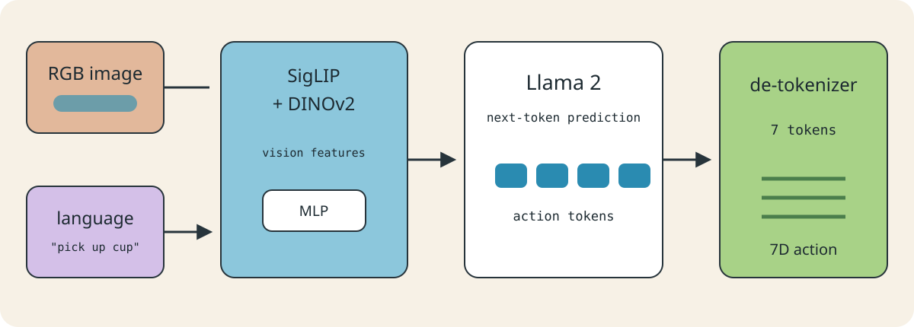
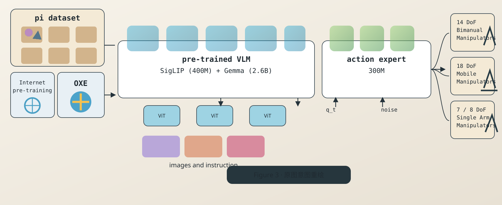
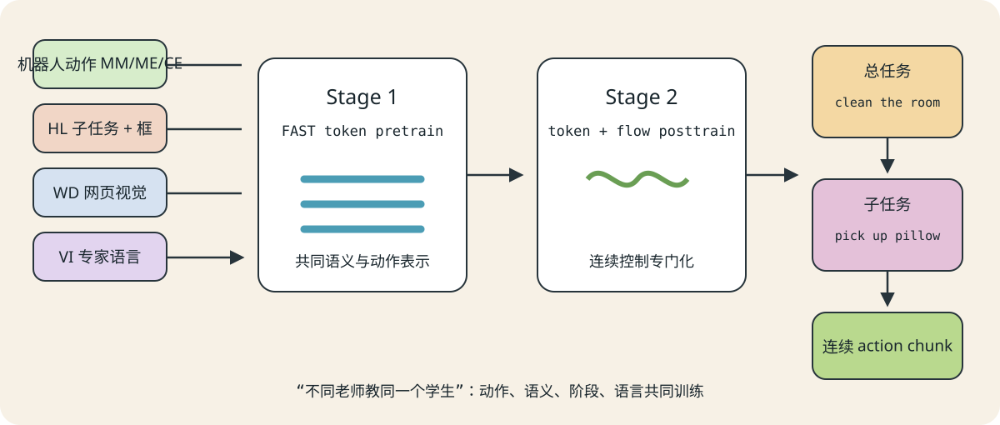

LV Robotics Lab · Reading Share
从 OpenVLA、π0、π0.5 到
双臂 PiPER 特权训练闭环
三篇 VLA 论文不是三个成品，而是三段路线：动作接口、连续控制、异构监督。真正的闭环，需要在 RoboDojo 里自己完成。
本项目提案 今天不预先宣布哪个模型更强，只问：训练时多看特权信息，部署时完全移除后，性能是否可归因地提升？
One question
Can privileged simulation knowledge train a visible-only bimanual policy?
action token→action chunk→heterogeneous supervision→privileged loop?
OpenVLA · π0 · π0.5
01 · Project Target
真正的问题：训练能看更多，部署不能作弊
训练期使用仿真全状态，训练出一个只依赖可部署观测的学生；然后在闭环任务里证明，提升不是因为测试时偷偷多接了一根“真值线”。
RoboDojo
ot + zt
→
教师 / 辅助标签
→
visible-only
student
→
无特权执行
部署允许
多相机 RGB、双臂本体状态、任务指令，以及经审计的可部署历史。
训练独有
物体真值位姿、接触、抓取标志、任务阶段、碰撞距离、奖励和进度。
第一阶段不复刻数十亿参数模型。先固定学生结构，证明信息使用方式。
02 · Definition
严格定义：什么才叫特权信息？
部署执行ot
可见观测
→
策略 + 固定控制器
→
动作
z_t 禁止进入决策链
独立评测zt
→
成功 / 碰撞 / 阶段 / 恢复日志
只记录，不反馈
本项目协议 除独立评测器外，任何会改变动作、重规划、裁剪、终止或恢复的组件都不能读取特权真值。
03 · Common Coordinate System
用同一把尺读三篇论文
| 维度 | OpenVLA | π0 | π0.5 |
|---|
| 部署输入 | 单图像 + 指令 | 多图像 + 指令 + 本体状态 | 多图像 + 状态 + 总任务 |
| 动作对象 | 单步 7D 动作 token | 连续 action chunk | 子任务文本 + 连续 action chunk |
| 训练重点 | 动作 token 交叉熵 | flow matching + pre/post-training | 异构共同训练 + 高层监督 |
| 项目价值 | 开放工程参照 | 连续动作接口 | 监督组织灵感 |
比较时固定：学生骨干 · 动作维度 · 坐标系 · chunk 长度 · 执行步数 · 控制器 · 训练预算 · 测试初始化。
蓝：部署观测绿：动作生成橙：训练目标紫：项目提案
04 · OpenVLA
把机器人动作塞进语言模型接口

结构重绘：原文 Figure 2 的中文讲解版。图像和语言进入视觉语言骨干，最后生成动作 token 并反离散化。
背景问题
既有通用 VLA 多为闭源，机器人动作如何接入预训练 VLM 并支持下游适配？
输入 → 输出
一张当前 RGB 图像 + 语言指令 → 当前控制时刻的 7 维单臂末端动作。
核心选择
连续动作不直接回归，而是逐维离散为 action token，让 Llama 2 继续做 next-token prediction。
05 · OpenVLA
动作 token：收益与代价
连续值
→
256 bins
→
action token
→
反离散化
为什么有效？
复用有限词表概率、交叉熵和自回归生成。
付出什么？
量化误差；普通交叉熵不认识“相邻 bin 更近”；单步 token 不保证时间平滑。
06 · OpenVLA
baseline 为什么这样选？
RT-1-X / Octo
通用机器人策略参照：大规模 VLA 预训练是否有价值？
RT-2-X
当时强大的闭源 VLA：开源 7B 模型能否竞争？
Diffusion Policy
连续 action chunk 的任务专家：窄任务中谁更平滑、更精确？
OpenVLA scratch
去掉 OpenX 机器人预训练：大规模机器人数据是否关键？
论文报告 OpenVLA 在多维泛化和多指令下游适配上有优势；论文未证明 action token 本身优于 diffusion/flow，也没验证双臂 PiPER。
70.6%WidowX 平均成功率
63.8%Franka 下游汇总
~6 Hz原版推理参照
原版边界：单图、单臂 7D、无 proprioception、无历史、无 action chunk。
07 · π0
输出不再是七个词，而是一段未来轨迹

π0 Figure 3 意图重绘：论文原图展示数据混合、PaliGemma VLM、action expert 和多种机器人 embodiment。你提供的截图原意已保留，中文演示版重新排版。
一次输出：[H, D] 连续 action chunk，而不是当前一步的 7 个 token。
VLM 提供视觉语言条件，action expert 处理带噪动作块和生成进度。action chunk 提高短时轨迹一致性，但执行一段后要重新观察。
08 · π0
Flow matching：每个样本给风场一支箭头
交互 2 · 条件向量场（二维玩具示意）
这是二维概念切片，不是论文真实的 50×D 高维动作空间。
随机动作块 X0
→
局部箭头
→
连续 action chunk
训练
已知专家动作 A、噪声 ε 和 τ，构造中间块并监督变化率。
推理
只采样一次初始噪声，之后根据当前块、观察和 τ 更新十次。
不要混淆
机器人时间 t ≠ 生成进度 τ；50 Hz ≠ 每秒重算 50 个 chunk。
09 · π0
证据与迁移：整套配方有效，不等于单组件胜出
| 对照 | 为什么选 | 证据边界 |
|---|
| OpenVLA | 离散自回归、无 chunk | 检验单步 token 接口在高频任务上的限制 |
| Octo | action chunk + diffusion，但更小 | 动作生成和容量同时变化 |
| π0-small | 去掉 VLM 初始化 | 检验视觉语言先验，但参数量/结构也变化 |
| compute-parity π0 | 限制更新步数 | 部分排除训练时间差异 |
可借鉴
多相机 + proprioception；连续 action chunk；广泛数据后高质量精修。
暂不照搬
3.3B 完整复刻、万小时预训练、18D 跨具身接口、同时做 sim-to-real。
论文未证明 flow matching 是全部性能提升的唯一原因；接口、数据规模、VLM 初始化和后训练同时影响结果。
10 · π0.5
感性理解：不同老师教同一个学生

π0.5 方法重绘：机器人动作、网页视觉、子任务、目标定位和专家语言共同进入训练；部署时先预测子任务，再生成低层动作。
机器人轨迹教“怎么动”；网页和目标线索教“是什么、在哪里”；子任务与专家语言教“下一步做什么”。
π0.5 主要考察已有技能在未见家庭环境、布局和有限新物体中的泛化，不应讲成自动获得任意新技能。
11 · π0.5
它接近特权监督，但不是严格特权学习
MM / ME / CE
多机器人动作与环境经验：扩大操作覆盖。
HL / WD
子任务、目标框、网页视觉语义：扩大可解释的中间监督。
VI
专家用语言示范任务分解：教高层如何选择下一步。
论文报告 异构数据和高层监督在其设置中有帮助。
论文未证明 这不是仿真全状态教师、经典 LUPI、特权蒸馏或自主数据聚合闭环。
| 项目可借鉴 | 项目必须自己验证 |
|---|
| 把 RoboDojo 真值转成阶段、几何、接触、双臂角色标签 | 学生只看普通观测时能否可靠预测这些标签，以及它们是否带来闭环提升 |
12 · Decision
采用、改造、暂不采用
| 论文 | Adopt | Adapt | Reject for now |
|---|
| OpenVLA | VLM 初始化、数据清洗、LoRA、开放工程参照 | token baseline 或语义编码器 | 原版单图 7D 作为最终双臂策略 |
| π0 | 多相机、本体状态、连续 chunk、pre/post 分工 | PiPER 动作维度；10-20步 chunk；接触阶段重规划 | 3.3B 完整复刻、万小时预训练 |
| π0.5 | 阶段、几何、接触、双臂角色监督 | 仿真自动标签；短任务先用阶段 ID | 开放世界导航与全模型复杂度 |
第一版最值得复用的是 数据和动作接口思想，不一定是模型规模。
13 · Gap
研究缺口：三篇都没回答我们的因果问题
π0
没有全状态教师或 asymmetric learning。
π0.5
有额外语义监督，但没有严格训练/部署信息不对称实验。
真正的空缺：zt only during training → visible-only student → fair closed-loop evaluation
另一个前置问题是可观测性：如果“已经抓稳”和“尚未抓稳”在允许观测中完全不可区分，学生不能靠更大模型恢复不存在的信息。
14 · RoboDojo Protocol
训练、部署、评测：三条信息流
部署执行RGB + q + instruction
→
student + fixed controller
→
At
z_t 断开
独立评测zt
→
success / collision / phase / recovery log
只记录，不反馈
审计范围包括策略输入、归一化、checkpoint 选择、后处理、安全过滤、终止逻辑和恢复逻辑。
15 · Fair Experiment
交互 3：一次只改变一个变量
公平性检查器
关闭所有未改变的开关；只要额外改变了多个因素，结论就不能归因。
当前：可归因对照
A1 Plain BC vs A2 Privileged Auxiliary
同轨迹、同动作标签、同学生；唯一增加训练期阶段/几何/接触辅助损失，部署时删除辅助头。
B1 Expert distribution vs B2 Student distribution
同教师、同查询规则、同有效标签预算；只改变新增状态来自教师还是学生访问分布。
16 · Evaluation
指标和风险：失败必须能定位
主指标完整任务成功率 + 训练种子层面的不确定性
过程指标阶段完成、双臂协调、时间、动作长度
安全指标碰撞、掉落、无效静止、恢复成功
可观测性不足
当前帧无法区分真实状态 → 需要统一历史/记忆。
特权泄漏
控制器、过滤器、终止逻辑偷看真值 → 结果无效。
教师覆盖不足
学生访问状态教师拒答或不可恢复 → 先记录，不能假装有标签。
接口变化
坐标系、chunk、频率、PD 变化 → 性能无法归因。
名义测试与单因素扰动分开；正式结论目标至少 5 个训练种子，3 个种子只能标为探索性。
17 · Milestones
两周目标：先证明特权监督是否值得继续
Day 1-3
冻结任务、观测、动作接口
→
Day 4-6
核对 z_t 并生成标签
→
Day 7-10
A1 / A2 / shuffled control
→
Day 11-14
配对评测与失败分类
今天需要拍板
第一阶段任务是否真正需要双臂？部署允许哪些相机、状态和历史？RoboDojo 哪些特权字段稳定？教师用脚本、规划器还是 state-based RL？学生先用 ACT、Diffusion Policy 还是小型 flow policy？
Go / No-Go
Go：提升跨训练种子、配对初始化和基本扰动，并确认无泄漏。No-Go：不稳定、可观测性不足或标签质量差，就先诊断，不扩大模型。
OpenVLA 告诉我们动作如何接入 VLM；π0 告诉我们如何生成连续动作块；π0.5 提示异构监督可能有帮助；真正的特权闭环，要由公平实验给出。
Appendix · Evidence Answers
三个问题的原文依据
先看结论，再展开证据。页码按本地 PDF 阅读器的物理页码标注。
Q1 · flat / human / HL
结论：论文没有直接证明 human 或 HL 对真正单阶段 non-high-level task 有帮助；Figure 9 测的是多物体、多步骤语言任务。
定义：π0-flat 只给总体任务；π0-human 接收人类中间语言命令；π0-HL 接收外部 high-level VLM 的中间命令。
原文位置：π0.pdf, Section VI-B, PDF pp.8-9；Figure 9, PDF p.9。
任务范围：Bussing、Grocery Bagging、Table Setting，都需要多个中间语言步骤。论文没有设置“单物体、单阶段、不需要任务分解”的成对 benchmark。
图中现象：π0-human 三项均高于 flat；π0-HL 在 Bussing/Table Setting 有帮助，但 Grocery Bagging 略低于 flat。因此不能说 HL 对所有任务都有益。
原文 PDF 未随本站提供：查 Section VI-B 与 Figure 9。
Q2 · 谁在做推理
结论：π0 需要内部 VLM 提供视觉语言条件，但不需要 VLM 先生成显式 reasoning 文本；外部 HL VLM 只是可选的长任务分解器。
内部 PaliGemma：图像和语言形成条件上下文；action expert 接收状态、带噪动作块和 flow 时间，输出连续向量场。
外部 high-level VLM：只在 π0-HL 中提供子任务命令；π0-flat 明确绕过外部 HL VLM，但仍使用内部 PaliGemma。
原文位置：π0.pdf, Figure 3/PDF p.4；Section IV/PDF pp.4-5；Appendix B/PDF p.15；Section V-B/PDF p.6；Section VI-B/PDF pp.8-9。
证据边界：论文没有做“action expert 有无 reasoning 模块”的因果消融，也没有报告 chain-of-thought。因此不能说 action expert 因 reasoning 不足而必须依靠 VLM。
原文 PDF 未随本站提供：查 Figure 3、Section IV、Appendix B。
Q3 · low-level task 有用吗
结论：机器人动作数据参与的整体共同训练配方有用；但论文没有证明 low-level action loss 本身独立于数据量、架构和高层监督有用。
直接证据：去掉 ME 或 CE 后，操作性能显著下降；增加 MM 训练环境数量，在固定 unique sample 设置下，新环境泛化总体提升。
原文位置：π0.5.pdf, Section IV-C/D, PDF pp.6-7；Figure 8/PDF p.9；Figure 10/PDF p.10；Figure 11/PDF p.10；Figure 12/PDF p.10；Figure 13/PDF p.11。
不能过度解读：ME/CE 同时改变了动作轨迹、机器人 embodiment、环境、任务、高层标注和数据量；π0-FAST+Flow 仍保留机器人动作数据，只能说明加入 HL/WD/高层组织后整体更强。
项目含义：应做正交消融：是否有 low-level action loss × 是否有 HL 监督，保持架构、样本量、训练步数和运行时条件一致。
原文 PDF 未随本站提供：查 Sections IV-V 与 Figures 8-13。
共同结论：三篇论文提供的是相邻证据，不是我们的特权闭环答案。Q1 要先按任务复杂度分层，Q2 要分清语义条件与显式推理，Q3 要用正交实验隔离低层动作监督。
Appendix · Three Answers
三个问题：结论、依据与边界
Q1 · flat / human / HL 对 non-high-level task 有帮助吗？
结论：论文没有直接证明。Figure 9 的 Bussing、Grocery Bagging、Table Setting 都需要多个物体、多步顺序和中间语言命令。
依据：π0.pdf Section VI-B，PDF pp.8-9；Figure 9，PDF p.9。π0-flat 只接收总体任务；π0-human 接收人类中间指令；π0-HL 接收外部 high-level VLM 的中间指令。
边界：论文没有设置真正单阶段、无需任务分解的 benchmark。可以说中间语言指导可能帮助长时程语义任务，不能说 HL 对所有任务都有帮助；Grocery Bagging 中 HL 还略低于 flat。
Q2 · π0 是不是必须 VLM 先 reasoning，再由 action expert 预测动作？
结论：不是。内部 PaliGemma 提供视觉语言条件表示；action expert 根据视觉语言条件、机器人状态、带噪动作块和 flow 时间生成连续动作。外部 high-level VLM 只在 HL 模式中可选地做长任务分解。
依据：π0.pdf Figure 3，PDF p.4；Section IV，PDF pp.4-5；Appendix B，PDF p.15；Section V-B，PDF p.6；Section VI-B，PDF pp.8-9。
边界：π0-flat 绕过外部 high-level VLM，但仍使用内部 PaliGemma。论文没有做 action expert 有无 reasoning 模块的消融，因此不能说 action expert 因 reasoning 不足而必须依靠 VLM。
Q3 · π0.5 预训练中的 low-level task 真的有用吗？
结论：机器人动作数据参与的整体共同训练配方有用；但 low-level action loss 的独立因果贡献没有被隔离证明。
依据：π0.5.pdf Section IV-C/D，PDF pp.6-7；Figures 8-13，PDF pp.9-11。Figure 8 支持环境多样性有价值；Figure 10 支持 ME/CE 数据源有用；Figure 11 显示 ME/CE 影响操作与目标选择、WD 特别影响 OOD 物体；Figure 12 的 π0-FAST+Flow 仍保留机器人动作数据。
边界：去掉 ME/CE 同时改变动作轨迹、机器人 embodiment、环境、任务、高层标注和数据量。因此不能说 low-level action loss 独立优于 HL、WD、VI 或其他训练信号。
最终判断：三篇论文给出相邻证据；我们的研究仍需要在固定学生、固定部署输入和固定动作接口下，单独检验训练期特权监督是否带来可归因闭环提升。